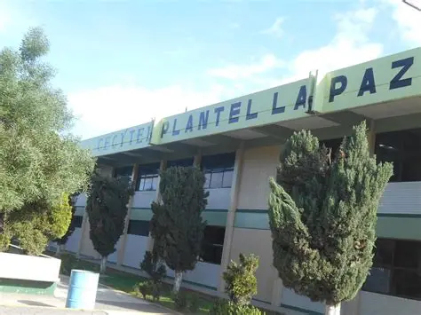

¡Prepárate hoy para transformar tu futuro! En CECyTEM La Paz puedes aprender, desarrollar tus habilidades y prepararte para nuevas oportunidades.
Somos una comunidad educativa que promueve la formación tecnológica y académica de los estudiantes. Aquí puedes desarrollar conocimientos y habilidades que te ayudarán en tu futuro.
También fomentamos la creatividad, el respeto, la responsabilidad y el trabajo en equipo para aprender y resolver problemas.

Conoce las opciones de formación que pueden ayudarte a desarrollar tus conocimientos y habilidades.
Durante tus estudios puedes participar en diferentes actividades que ayudan a mejorar tus conocimientos y tu desarrollo personal.
La formación tecnológica permite aprender a utilizar herramientas digitales, crear proyectos y resolver problemas. Estos conocimientos pueden abrirte oportunidades para continuar estudiando o trabajar en el futuro.
Consulta información sobre el plantel y descubre las oportunidades educativas disponibles.